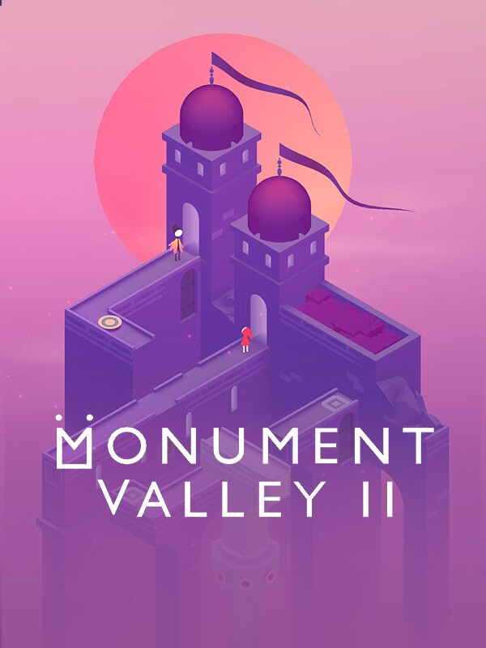

Monument Valley 2
Monument Valley 2
Details
|  | |
| Playtime | Not Played |
| Last Activity | Never |
| Added | 9/11/2025 15:14:40 |
| Modified | 9/18/2025 12:09:57 |
| Completion Status | Not Played |
| Library | Epic |
| Source | Epic |
| Platform | Epic Games |
| Release Date | 5/30/2017 |
| Community Score | 86 |
| Critic Score | 80 |
| User Score | |
| Genre | Adventure Casual Indie Strategy |
| Developer | Ustwo Games |
| Publisher | Ustwo Games |
| Feature | Single-Player |
| Links | Facebook Wikipedia App Store (iPhone) Google Play App Store (iPad) Twitch Official Website Community Wiki YouTube Subreddit Bluesky |
| Tag | [GGDeals] Synced |
Description
Perception meets reality in Monument Valley 2, the atmospheric return of the acclaimed smash hit Monument Valley. Explore, Grow and Guide Ro and her Child through a magical and moving world.
Discover illusionary pathways and delightful puzzles as you learn the secrets of The Sacred Geometry.
In this meditative and calming puzzle game, follow the heart warming story of Ro in her journey through motherhood. Rediscover independence through manipulating monuments and evolving paths to explore new, surreal, and mysterious worlds.
The Award Winning Series Returns
- Welcome back to the world of magical and mysterious monuments in Monument Valley 2, the award-winning sequel to the critically acclaimed Monument Valley.
- Featuring brand-new environments and puzzles to explore, Monument Valley 2 is a surreal and beautiful experience, with an mistakably unique art style inspired by optical illusions that will keep players feeling in awe.
- As you make your way through Ro and her child’s adventure, there will always be exciting and mysterious mechanics to unlock, and new friends to meet along the way.
Beautifully Unique
- A critically acclaimed sequel to Monument Valley, Monument Valley 2 returns you to the world of magical and mysterious architecture in a completely stand-alone adventure. You don’t need to have played the original Monument Valley to be able to enjoy this experience. The game features brand new worlds and unique puzzles to explore.
Simple For All
- Click and drag to reshape the world and help Ro and her Child explore breathtaking yet impossible areas. Designed to be easy for everyone to pick up, enjoy and complete. Monument Valley 2: Panoramic Edition is the biggest and best way to play Monument Valley 2 yet.
A New Way to Play
- With an entirely new control scheme reimagined for PC, you can interact with the universe of Monument Valley in a unique and tactile way. Combined with an all-new panoramic way to play the game designed for Full HD and ultrawide displays, Monument Valley 2 is more awe-inspiring and beautiful than ever before.
Every Puzzle Included
- Monument Valley 2: Panoramic Edition is the total collection of all Monument Valley 2 content - with every chapter added to make this the ultimate game to add to your collection. Taking influence from minimalist 3D design, optical illusions and ancient architecture from around the world, every monument is a unique, hand-crafted world to explore.
Two Is Better Than One
- Monument Valley: Panoramic Edition and Monument Valley 2: Panoramic Edition are both available at an exclusive bundle price when purchased together on Steam. The Panoramic Collection is the best way to play the Monument Valley series.

ustwo games are proud independent developers, best known for the award-winning Monument Valley series, Land’s End, Assemble with Care and Alba: A Wildlife Adventure.